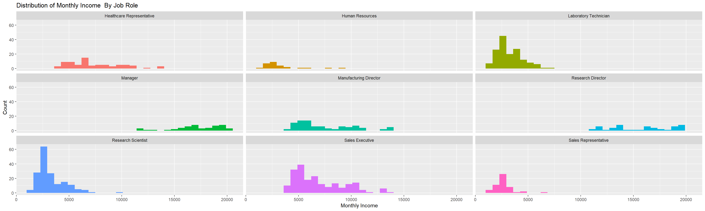
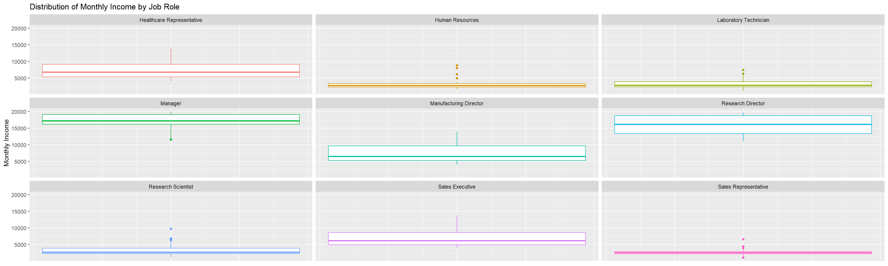
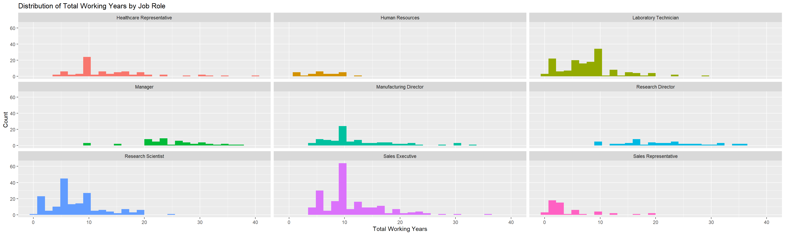
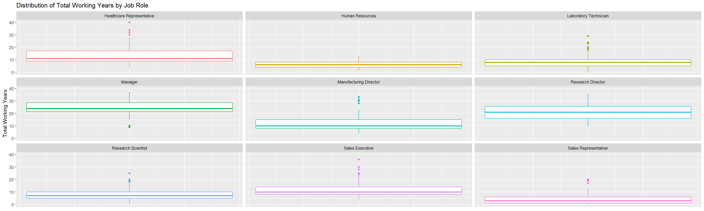
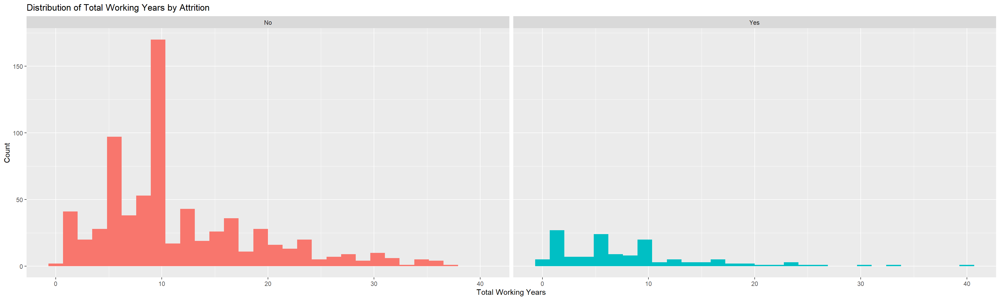
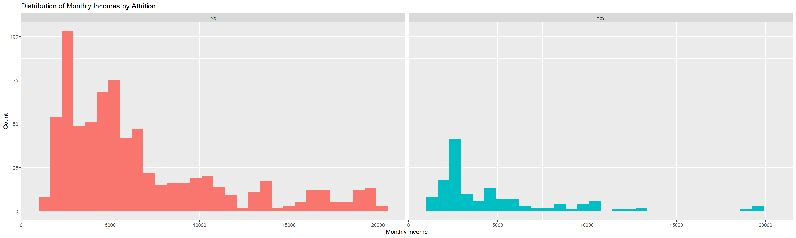
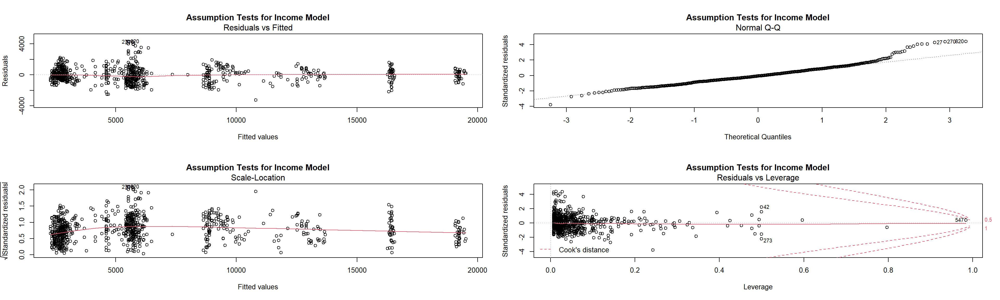
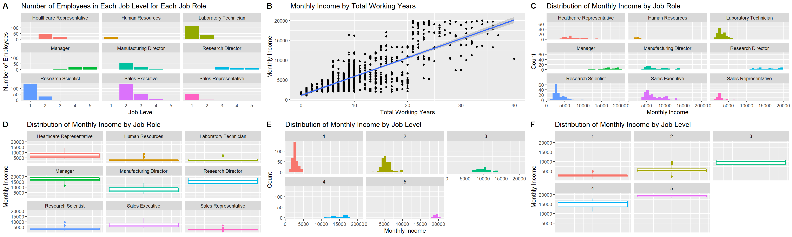

library(tidyverse)
library(e1071)
library(caret)
library(corrplot)
library(class)
library(vcd)
library(olsrr)
library(MPV)
library(cowplot)#Data Import
EmpData <- read.csv(choose.files(), header = T, sep = ",")
#Remove Employee ID Numbers, over 18 as all employees are over 18, and Standard hours as all standard hours are 80
EmpData <- EmpData[,-c(1, 10, 11, 23, 28)]
#Convert characters to factors
EmpData[sapply(EmpData, is.character)] <- lapply(EmpData[sapply(EmpData, is.character)],
as.factor)
#Check for NAs
map(EmpData, ~sum(is.na(.)))## $Age
## [1] 0
##
## $Attrition
## [1] 0
##
## $BusinessTravel
## [1] 0
##
## $DailyRate
## [1] 0
##
## $Department
## [1] 0
##
## $DistanceFromHome
## [1] 0
##
## $Education
## [1] 0
##
## $EducationField
## [1] 0
##
## $EnvironmentSatisfaction
## [1] 0
##
## $Gender
## [1] 0
##
## $HourlyRate
## [1] 0
##
## $JobInvolvement
## [1] 0
##
## $JobLevel
## [1] 0
##
## $JobRole
## [1] 0
##
## $JobSatisfaction
## [1] 0
##
## $MaritalStatus
## [1] 0
##
## $MonthlyIncome
## [1] 0
##
## $MonthlyRate
## [1] 0
##
## $NumCompaniesWorked
## [1] 0
##
## $OverTime
## [1] 0
##
## $PercentSalaryHike
## [1] 0
##
## $PerformanceRating
## [1] 0
##
## $RelationshipSatisfaction
## [1] 0
##
## $StockOptionLevel
## [1] 0
##
## $TotalWorkingYears
## [1] 0
##
## $TrainingTimesLastYear
## [1] 0
##
## $WorkLifeBalance
## [1] 0
##
## $YearsAtCompany
## [1] 0
##
## $YearsInCurrentRole
## [1] 0
##
## $YearsSinceLastPromotion
## [1] 0
##
## $YearsWithCurrManager
## [1] 0#Check number of levels for each factor
str(EmpData)## 'data.frame': 870 obs. of 31 variables:
## $ Age : int 32 40 35 32 24 27 41 37 34 34 ...
## $ Attrition : Factor w/ 2 levels "No","Yes": 1 1 1 1 1 1 1 1 1 1 ...
## $ BusinessTravel : Factor w/ 3 levels "Non-Travel","Travel_Frequently",..: 3 3 2 3 2 2 3 3 3 2 ...
## $ DailyRate : int 117 1308 200 801 567 294 1283 309 1333 653 ...
## $ Department : Factor w/ 3 levels "Human Resources",..: 3 2 2 3 2 2 2 3 3 2 ...
## $ DistanceFromHome : int 13 14 18 1 2 10 5 10 10 10 ...
## $ Education : int 4 3 2 4 1 2 5 4 4 4 ...
## $ EducationField : Factor w/ 6 levels "Human Resources",..: 2 4 2 3 6 2 4 2 2 6 ...
## $ EnvironmentSatisfaction : int 2 3 3 3 1 4 2 4 3 4 ...
## $ Gender : Factor w/ 2 levels "Female","Male": 2 2 2 1 1 2 2 1 1 2 ...
## $ HourlyRate : int 73 44 60 48 32 32 90 88 87 92 ...
## $ JobInvolvement : int 3 2 3 3 3 3 4 2 3 2 ...
## $ JobLevel : int 2 5 3 3 1 3 1 2 1 2 ...
## $ JobRole : Factor w/ 9 levels "Healthcare Representative",..: 8 6 5 8 7 5 7 8 9 1 ...
## $ JobSatisfaction : int 4 3 4 4 4 1 3 4 3 3 ...
## $ MaritalStatus : Factor w/ 3 levels "Divorced","Married",..: 1 3 3 2 3 1 2 1 2 2 ...
## $ MonthlyIncome : int 4403 19626 9362 10422 3760 8793 2127 6694 2220 5063 ...
## $ MonthlyRate : int 9250 17544 19944 24032 17218 4809 5561 24223 18410 15332 ...
## $ NumCompaniesWorked : int 2 1 2 1 1 1 2 2 1 1 ...
## $ OverTime : Factor w/ 2 levels "No","Yes": 1 1 1 1 2 1 2 2 2 1 ...
## $ PercentSalaryHike : int 11 14 11 19 13 21 12 14 19 14 ...
## $ PerformanceRating : int 3 3 3 3 3 4 3 3 3 3 ...
## $ RelationshipSatisfaction: int 3 1 3 3 3 3 1 3 4 2 ...
## $ StockOptionLevel : int 1 0 0 2 0 2 0 3 1 1 ...
## $ TotalWorkingYears : int 8 21 10 14 6 9 7 8 1 8 ...
## $ TrainingTimesLastYear : int 3 2 2 3 2 4 5 5 2 3 ...
## $ WorkLifeBalance : int 2 4 3 3 3 2 2 3 3 2 ...
## $ YearsAtCompany : int 5 20 2 14 6 9 4 1 1 8 ...
## $ YearsInCurrentRole : int 2 7 2 10 3 7 2 0 1 2 ...
## $ YearsSinceLastPromotion : int 0 4 2 5 1 1 0 0 0 7 ...
## $ YearsWithCurrManager : int 3 9 2 7 3 7 3 0 0 7 ...#convert more columns for int to factor
EmpData$Education <- as.factor(EmpData$Education)
EmpData$JobInvolvement <- as.factor(EmpData$JobInvolvement)
EmpData$JobLevel <- as.factor(EmpData$JobLevel)
EmpData$JobSatisfaction <- as.factor(EmpData$JobSatisfaction)
EmpData$PerformanceRating <- as.factor(EmpData$PerformanceRating)
EmpData$RelationshipSatisfaction <- as.factor(EmpData$RelationshipSatisfaction)
EmpData$StockOptionLevel <- as.factor(EmpData$StockOptionLevel)
EmpData$WorkLifeBalance <- as.factor(EmpData$WorkLifeBalance)#split dataframe into separate frames for yes and no attrition
AtrYes = EmpData %>% filter(Attrition == "Yes")
AtrNo = EmpData %>% filter(Attrition == "No")
Grid = data.frame(usekernel=TRUE,laplace = 1,adjust=1)
#create dataframe to hold most important variables
ImpName <- data.frame()
#run naive bayes with loocv 100 times and select 3 most important variables using ROC
#This testing uses under sampling in which 140 random no attrition values are selected to
#compare to the 140 yes attrition values in the original Employee Data
for(i in 1:100){
AtrNoSample = sample_n(AtrNo, 140)
AtrDF <- data.frame()
AtrDF = rbind(AtrYes, AtrNoSample)
mdl = train(Attrition ~ .,data=AtrDF,method="naive_bayes",
trControl=trainControl(method="LOOCV"),
tuneGrid=Grid)
ImpMeasure<-data.frame(varImp(mdl)$importance)
ImpMeasure$Name<-row.names(ImpMeasure)
ImpMeasure <- ImpMeasure[order(-ImpMeasure$Yes),]
ImpMeasure <- ImpMeasure[1:3,] %>% select(Name)
rownames(ImpMeasure) <- NULL
ImpName <- rbind(ImpName, ImpMeasure)
}#Create data frame with only the 3 most influential variables from EmpData: Overtime, Monthly Income, and Total Working Years
AtrNB <- data.frame(MonthlyIncome = EmpData$MonthlyIncome, OverTime = EmpData$OverTime,
TotalWorkingYears= EmpData$TotalWorkingYears, Attrition = EmpData$Attrition)
AtrYesNB = AtrNB %>% filter(Attrition == "Yes")
AtrNoNB = AtrNB %>% filter(Attrition == "No")
iterations = 100
masterAcc = matrix(nrow = iterations)
masterSen = matrix(nrow = iterations)
masterSpe = matrix(nrow = iterations)
for(j in 1:iterations)
{
AtrNoSampleNB = sample_n(AtrNoNB, 140)
AtrDFNB <- data.frame()
AtrDFNB = rbind(AtrYesNB, AtrNoSampleNB)
mdlNB = train(Attrition~., data = AtrDFNB, "naive_bayes", trControl=trainControl(method="LOOCV"), tuneGrid = Grid)
predict = predict(mdlNB, newdata = EmpData)
CM = confusionMatrix(predict, EmpData$Attrition)
masterAcc[j] = CM$overall[1]
masterSen[j] = CM$byClass[1]
masterSpe[j] = CM$byClass[2]
}
MeanAcc = colMeans(masterAcc)
masterSen[is.na(masterSen)] = 0
MeanSen = colMeans(masterSen)
masterSpe[is.na(masterSpe)] = 0
MeanSpe = colMeans(masterSpe)
MeanAcc## [1] 0.7182299MeanSen## [1] 0.7328356MeanSpe## [1] 0.6420714#import the competition data set that has no attrition labels
compData <- read.csv(choose.files(), header = T, sep = ",")
compData[sapply(compData, is.character)] <- lapply(compData[sapply(compData, is.character)],
as.factor)
#run naive-bayes model again and confirm accuracy
AtrNB <- data.frame(MonthlyIncome = EmpData$MonthlyIncome, OverTime = EmpData$OverTime,
TotalWorkingYears= EmpData$TotalWorkingYears, Attrition = EmpData$Attrition)
AtrYesNB = AtrNB %>% filter(Attrition == "Yes")
AtrNoNB = AtrNB %>% filter(Attrition == "No")
AtrNoSampleNB = sample_n(AtrNoNB, 140)
AtrDFNB <- data.frame()
AtrDFNB = rbind(AtrYesNB, AtrNoSampleNB)
mdlNB = train(Attrition~., data = AtrDFNB, "naive_bayes", trControl=trainControl(method="LOOCV"), tuneGrid = Grid)
predict = predict(mdlNB, newdata = EmpData)
CM = confusionMatrix(predict, EmpData$Attrition)
#run predictions for attrition labels for competition set
predictComp = predict(mdlNB, newdata = compData)
finalCompDF <- data.frame(ID = compData$ID, Attrition = predictComp)
#save the competition predictions to a csv
write.csv(finalCompDF, file = choose.files())#create table of attrition by job role
tab <- table(EmpData$JobRole, EmpData$Attrition)
tab <- cbind(tab, Total = rowSums(tab))
#convert to data frame and add percentage of how many employees were yes or no attrition by job role
JobAtrDF <- as.data.frame.matrix(tab)
JobAtrDF$Percent_No <- round((JobAtrDF$No/JobAtrDF$Total)*100, 2)
JobAtrDF$Percent_Yes <- round((JobAtrDF$Yes/JobAtrDF$Total)*100, 2)
JobAtrDF <- JobAtrDF[order(-JobAtrDF$Percent_Yes),]
#table of overtime by job role
tab2 <- table(EmpData$JobRole, EmpData$OverTime)
tab2 <- cbind(tab2, Total = rowSums(tab2))
#convert to dataframe and add percentage of how many employees were yes or no overtime by job role
JobOvrDF <- as.data.frame.matrix(tab2)
JobOvrDF$Percent_No <- round((JobOvrDF$No/JobOvrDF$Total)*100, 2)
JobOvrDF$Percent_Yes <- round((JobOvrDF$Yes/JobOvrDF$Total)*100, 2)
JobOvrDF <- JobOvrDF[order(-JobOvrDF$Percent_Yes),]
#Monthly income by job role histogram
EmpData %>% ggplot(aes(x = MonthlyIncome, fill = JobRole)) + geom_histogram(show.legend = FALSE) + facet_wrap(~JobRole) +
labs(title = "Distribution of Monthly Income By Job Role", x = "Monthly Income", y = "Count")## `stat_bin()` using `bins = 30`. Pick better value with `binwidth`.
#Monthly income by job role boxplot
EmpData %>% ggplot(aes(y = MonthlyIncome, color = JobRole)) + geom_boxplot(show.legend = FALSE) + facet_wrap(~JobRole) +
labs(title = "Distribution of Monthly Income by Job Role", y = "Monthly Income") +
theme(axis.title.x=element_blank(),axis.text.x=element_blank(), axis.ticks.x=element_blank())
#total working years by job role histogram
EmpData %>% ggplot(aes(x = TotalWorkingYears, fill = JobRole)) + geom_histogram(show.legend = FALSE) + facet_wrap(~JobRole) +
labs(title = "Distribution of Total Working Years by Job Role", x = "Total Working Years", y = "Count")## `stat_bin()` using `bins = 30`. Pick better value with `binwidth`.
#total working years by job role boxpot
EmpData %>% ggplot(aes(y = TotalWorkingYears, color = JobRole)) + geom_boxplot(show.legend = FALSE) + facet_wrap(~JobRole) +
labs(title = "Distribution of Total Working Years by Job Role", y = "Total Working Years") +
theme(axis.title.x=element_blank(),axis.text.x=element_blank(), axis.ticks.x=element_blank())
#attrition by total working years
EmpData %>% ggplot(aes(x = TotalWorkingYears, fill = Attrition)) + geom_histogram(show.legend = FALSE) + facet_wrap(~Attrition) +
labs(title = "Distribution of Total Working Years by Attrition", x = "Total Working Years", y = "Count")## `stat_bin()` using `bins = 30`. Pick better value with `binwidth`.
#attrition by monthly income
EmpData %>% ggplot(aes(x = MonthlyIncome, fill = Attrition)) + geom_histogram(show.legend = FALSE) + facet_wrap(~Attrition) +
labs(title = "Distribution of Monthly Incomes by Attrition", x = "Monthly Income", y = "Count")## `stat_bin()` using `bins = 30`. Pick better value with `binwidth`. ## Predict Monthly Income
#Create model contaning all variables to predict monthly income
IncomeMdl <- lm(MonthlyIncome ~ ., data = EmpData)
#create dataframe and model containing variables selected by Forward Selection
SelectForward <- ols_step_forward_p(IncomeMdl, peneter = 0.05, details = FALSE)
VarFoward <- SelectForward$predictors
ForwardDF <- EmpData %>% select(VarFoward, MonthlyIncome)## Note: Using an external vector in selections is ambiguous.
## i Use `all_of(VarFoward)` instead of `VarFoward` to silence this message.
## i See <https://tidyselect.r-lib.org/reference/faq-external-vector.html>.
## This message is displayed once per session.MdlFrwrd <- lm(MonthlyIncome ~ . , data = ForwardDF)
summary(MdlFrwrd)##
## Call:
## lm(formula = MonthlyIncome ~ ., data = ForwardDF)
##
## Residuals:
## Min 1Q Median 3Q Max
## -3304.0 -625.1 -64.7 594.6 4204.2
##
## Coefficients:
## Estimate Std. Error t value Pr(>|t|)
## (Intercept) 2.703e+03 5.308e+02 5.092 4.37e-07 ***
## JobLevel2 1.729e+03 1.398e+02 12.365 < 2e-16 ***
## JobLevel3 4.969e+03 1.869e+02 26.586 < 2e-16 ***
## JobLevel4 8.343e+03 2.835e+02 29.429 < 2e-16 ***
## JobLevel5 1.095e+04 3.332e+02 32.882 < 2e-16 ***
## JobRoleHuman Resources -8.480e+02 4.873e+02 -1.740 0.08218 .
## JobRoleLaboratory Technician -1.205e+03 1.744e+02 -6.911 9.46e-12 ***
## JobRoleManager 3.652e+03 2.810e+02 12.998 < 2e-16 ***
## JobRoleManufacturing Director 1.368e+02 1.575e+02 0.868 0.38551
## JobRoleResearch Director 3.530e+03 2.117e+02 16.673 < 2e-16 ***
## JobRoleResearch Scientist -1.003e+03 1.778e+02 -5.640 2.33e-08 ***
## JobRoleSales Executive 5.591e+02 3.355e+02 1.667 0.09596 .
## JobRoleSales Representative -6.758e+02 3.775e+02 -1.790 0.07381 .
## TotalWorkingYears 4.468e+01 7.778e+00 5.744 1.29e-08 ***
## BusinessTravelTravel_Frequently 2.248e+02 1.319e+02 1.704 0.08870 .
## BusinessTravelTravel_Rarely 3.486e+02 1.117e+02 3.122 0.00186 **
## DailyRate 1.748e-01 8.522e-02 2.051 0.04057 *
## Education2 -2.802e+01 1.264e+02 -0.222 0.82457
## Education3 -8.934e+01 1.165e+02 -0.767 0.44318
## Education4 6.012e+01 1.228e+02 0.490 0.62458
## Education5 -4.154e+02 2.266e+02 -1.833 0.06717 .
## DepartmentResearch & Development 2.315e+02 4.176e+02 0.554 0.57943
## DepartmentSales -3.337e+02 4.269e+02 -0.782 0.43462
## GenderMale 8.290e+01 6.967e+01 1.190 0.23444
## PerformanceRating4 -2.630e+02 1.519e+02 -1.731 0.08375 .
## PercentSalaryHike 1.888e+01 1.482e+01 1.274 0.20305
## DistanceFromHome -4.735e+00 4.214e+00 -1.124 0.26150
## ---
## Signif. codes: 0 '***' 0.001 '**' 0.01 '*' 0.05 '.' 0.1 ' ' 1
##
## Residual standard error: 996.7 on 843 degrees of freedom
## Multiple R-squared: 0.9544, Adjusted R-squared: 0.953
## F-statistic: 678.8 on 26 and 843 DF, p-value: < 2.2e-16#create dataframe and model containing variables selected by Backward Selection
SelectBackward <- ols_step_backward_p(IncomeMdl, peneter = 0.05, details = FALSE)
MdlBackward <- lm(MonthlyIncome ~ JobLevel + JobRole + TotalWorkingYears + BusinessTravel + Gender +
DailyRate + MonthlyRate + YearsWithCurrManager + YearsSinceLastPromotion +
DistanceFromHome + PerformanceRating + PercentSalaryHike + Department, data = EmpData)
summary(MdlBackward)##
## Call:
## lm(formula = MonthlyIncome ~ JobLevel + JobRole + TotalWorkingYears +
## BusinessTravel + Gender + DailyRate + MonthlyRate + YearsWithCurrManager +
## YearsSinceLastPromotion + DistanceFromHome + PerformanceRating +
## PercentSalaryHike + Department, data = EmpData)
##
## Residuals:
## Min 1Q Median 3Q Max
## -3362.7 -618.9 -61.5 580.1 4226.4
##
## Coefficients:
## Estimate Std. Error t value Pr(>|t|)
## (Intercept) 2.734e+03 5.270e+02 5.188 2.67e-07 ***
## JobLevel2 1.747e+03 1.410e+02 12.393 < 2e-16 ***
## JobLevel3 4.956e+03 1.890e+02 26.229 < 2e-16 ***
## JobLevel4 8.252e+03 2.823e+02 29.230 < 2e-16 ***
## JobLevel5 1.091e+04 3.334e+02 32.727 < 2e-16 ***
## JobRoleHuman Resources -8.842e+02 4.887e+02 -1.809 0.07074 .
## JobRoleLaboratory Technician -1.199e+03 1.756e+02 -6.826 1.67e-11 ***
## JobRoleManager 3.686e+03 2.817e+02 13.087 < 2e-16 ***
## JobRoleManufacturing Director 1.438e+02 1.581e+02 0.910 0.36318
## JobRoleResearch Director 3.541e+03 2.134e+02 16.596 < 2e-16 ***
## JobRoleResearch Scientist -1.011e+03 1.784e+02 -5.666 2.01e-08 ***
## JobRoleSales Executive 5.570e+02 3.363e+02 1.656 0.09803 .
## JobRoleSales Representative -6.707e+02 3.787e+02 -1.771 0.07695 .
## TotalWorkingYears 4.569e+01 8.374e+00 5.456 6.40e-08 ***
## BusinessTravelTravel_Frequently 2.043e+02 1.321e+02 1.547 0.12217
## BusinessTravelTravel_Rarely 3.458e+02 1.120e+02 3.089 0.00207 **
## GenderMale 8.131e+01 6.994e+01 1.163 0.24531
## DailyRate 1.730e-01 8.555e-02 2.023 0.04344 *
## MonthlyRate -4.352e-03 4.849e-03 -0.897 0.36976
## YearsWithCurrManager -7.670e+00 1.210e+01 -0.634 0.52647
## YearsSinceLastPromotion 1.215e+01 1.326e+01 0.916 0.35980
## DistanceFromHome -5.144e+00 4.216e+00 -1.220 0.22275
## PerformanceRating4 -2.837e+02 1.519e+02 -1.868 0.06207 .
## PercentSalaryHike 2.116e+01 1.484e+01 1.426 0.15411
## DepartmentResearch & Development 2.018e+02 4.188e+02 0.482 0.63007
## DepartmentSales -3.586e+02 4.278e+02 -0.838 0.40214
## ---
## Signif. codes: 0 '***' 0.001 '**' 0.01 '*' 0.05 '.' 0.1 ' ' 1
##
## Residual standard error: 999.1 on 844 degrees of freedom
## Multiple R-squared: 0.9541, Adjusted R-squared: 0.9528
## F-statistic: 702.4 on 25 and 844 DF, p-value: < 2.2e-16#create dataframe and model containing varaibles selected by Stepwise Selection
SelectStep <- ols_step_both_p(IncomeMdl, peneter = 0.05, details = FALSE)
VarStep <- SelectStep$predictors
StepDF <- EmpData %>% select(VarStep, MonthlyIncome)## Note: Using an external vector in selections is ambiguous.
## i Use `all_of(VarStep)` instead of `VarStep` to silence this message.
## i See <https://tidyselect.r-lib.org/reference/faq-external-vector.html>.
## This message is displayed once per session.MdlStep <- lm(MonthlyIncome ~ . , data = StepDF)
summary(MdlStep)##
## Call:
## lm(formula = MonthlyIncome ~ ., data = StepDF)
##
## Residuals:
## Min 1Q Median 3Q Max
## -3188.6 -631.5 -93.0 607.1 4097.1
##
## Coefficients:
## Estimate Std. Error t value Pr(>|t|)
## (Intercept) 3.192e+03 2.165e+02 14.747 < 2e-16 ***
## JobLevel2 1.706e+03 1.386e+02 12.312 < 2e-16 ***
## JobLevel3 4.932e+03 1.861e+02 26.497 < 2e-16 ***
## JobLevel4 8.262e+03 2.811e+02 29.397 < 2e-16 ***
## JobLevel5 1.095e+04 3.310e+02 33.075 < 2e-16 ***
## JobRoleHuman Resources -1.115e+03 2.512e+02 -4.438 1.03e-05 ***
## JobRoleLaboratory Technician -1.231e+03 1.745e+02 -7.053 3.61e-12 ***
## JobRoleManager 3.376e+03 2.373e+02 14.229 < 2e-16 ***
## JobRoleManufacturing Director 1.171e+02 1.577e+02 0.743 0.45793
## JobRoleResearch Director 3.499e+03 2.105e+02 16.619 < 2e-16 ***
## JobRoleResearch Scientist -1.027e+03 1.777e+02 -5.780 1.05e-08 ***
## JobRoleSales Executive -1.236e+01 1.360e+02 -0.091 0.92762
## JobRoleSales Representative -1.245e+03 2.203e+02 -5.650 2.18e-08 ***
## TotalWorkingYears 4.544e+01 7.722e+00 5.885 5.72e-09 ***
## BusinessTravelTravel_Frequently 1.916e+02 1.318e+02 1.453 0.14655
## BusinessTravelTravel_Rarely 3.351e+02 1.117e+02 3.001 0.00277 **
## DailyRate 1.785e-01 8.521e-02 2.095 0.03644 *
## ---
## Signif. codes: 0 '***' 0.001 '**' 0.01 '*' 0.05 '.' 0.1 ' ' 1
##
## Residual standard error: 1001 on 853 degrees of freedom
## Multiple R-squared: 0.9535, Adjusted R-squared: 0.9526
## F-statistic: 1093 on 16 and 853 DF, p-value: < 2.2e-16#All three models agree on job level, job role, and total working years as most significant
#Create model using these 3 variables
LmModel <- lm(MonthlyIncome ~ JobLevel + JobRole + TotalWorkingYears, data = EmpData)
summary(LmModel)##
## Call:
## lm(formula = MonthlyIncome ~ JobLevel + JobRole + TotalWorkingYears,
## data = EmpData)
##
## Residuals:
## Min 1Q Median 3Q Max
## -3184.4 -622.9 -83.6 623.4 4282.9
##
## Coefficients:
## Estimate Std. Error t value Pr(>|t|)
## (Intercept) 3620.912 180.824 20.025 < 2e-16 ***
## JobLevel2 1687.533 139.069 12.134 < 2e-16 ***
## JobLevel3 4913.569 186.878 26.293 < 2e-16 ***
## JobLevel4 8246.787 282.379 29.205 < 2e-16 ***
## JobLevel5 11003.473 332.523 33.091 < 2e-16 ***
## JobRoleHuman Resources -1106.211 252.764 -4.376 1.36e-05 ***
## JobRoleLaboratory Technician -1243.528 175.324 -7.093 2.75e-12 ***
## JobRoleManager 3332.134 237.808 14.012 < 2e-16 ***
## JobRoleManufacturing Director 134.719 158.506 0.850 0.396
## JobRoleResearch Director 3479.341 211.496 16.451 < 2e-16 ***
## JobRoleResearch Scientist -1040.524 178.715 -5.822 8.21e-09 ***
## JobRoleSales Executive -13.146 136.850 -0.096 0.923
## JobRoleSales Representative -1267.454 220.601 -5.745 1.27e-08 ***
## TotalWorkingYears 45.975 7.768 5.918 4.70e-09 ***
## ---
## Signif. codes: 0 '***' 0.001 '**' 0.01 '*' 0.05 '.' 0.1 ' ' 1
##
## Residual standard error: 1007 on 856 degrees of freedom
## Multiple R-squared: 0.9527, Adjusted R-squared: 0.952
## F-statistic: 1327 on 13 and 856 DF, p-value: < 2.2e-16LmModel2 <- lm(MonthlyIncome ~ JobLevel * JobRole * TotalWorkingYears, data = EmpData)
summary(LmModel2)##
## Call:
## lm(formula = MonthlyIncome ~ JobLevel * JobRole * TotalWorkingYears,
## data = EmpData)
##
## Residuals:
## Min 1Q Median 3Q Max
## -3273.9 -596.5 -59.3 538.0 4322.7
##
## Coefficients: (40 not defined because of singularities)
## Estimate Std. Error t value Pr(>|t|)
## (Intercept) 1732.710 1905.464 0.909 0.363439
## JobLevel2 3440.162 1861.944 1.848 0.065018
## JobLevel3 6102.983 1960.657 3.113 0.001918
## JobLevel4 11404.894 2936.737 3.884 0.000111
## JobLevel5 13948.006 3351.443 4.162 3.49e-05
## JobRoleHuman Resources 864.668 1953.963 0.443 0.658230
## JobRoleLaboratory Technician 665.908 1912.938 0.348 0.727849
## JobRoleManager 2766.002 2990.347 0.925 0.355250
## JobRoleManufacturing Director -307.203 2981.323 -0.103 0.917954
## JobRoleResearch Director 3459.968 2371.125 1.459 0.144890
## JobRoleResearch Scientist 769.193 1912.118 0.402 0.687588
## JobRoleSales Executive -896.756 2914.810 -0.308 0.758423
## JobRoleSales Representative 570.128 1895.945 0.301 0.763713
## TotalWorkingYears 192.863 158.197 1.219 0.223144
## JobLevel2:JobRoleHuman Resources 41.951 1035.796 0.041 0.967704
## JobLevel3:JobRoleHuman Resources 7777.639 13426.270 0.579 0.562556
## JobLevel4:JobRoleHuman Resources NA NA NA NA
## JobLevel5:JobRoleHuman Resources NA NA NA NA
## JobLevel2:JobRoleLaboratory Technician -328.024 1970.159 -0.166 0.867808
## JobLevel3:JobRoleLaboratory Technician -11871.213 5867.984 -2.023 0.043392
## JobLevel4:JobRoleLaboratory Technician NA NA NA NA
## JobLevel5:JobRoleLaboratory Technician NA NA NA NA
## JobLevel2:JobRoleManager NA NA NA NA
## JobLevel3:JobRoleManager -613.384 3639.515 -0.169 0.866204
## JobLevel4:JobRoleManager 773.862 2348.981 0.329 0.741903
## JobLevel5:JobRoleManager NA NA NA NA
## JobLevel2:JobRoleManufacturing Director 544.776 3030.113 0.180 0.857364
## JobLevel3:JobRoleManufacturing Director 78.345 3059.891 0.026 0.979580
## JobLevel4:JobRoleManufacturing Director NA NA NA NA
## JobLevel5:JobRoleManufacturing Director NA NA NA NA
## JobLevel2:JobRoleResearch Director NA NA NA NA
## JobLevel3:JobRoleResearch Director -1429.467 2648.298 -0.540 0.589503
## JobLevel4:JobRoleResearch Director NA NA NA NA
## JobLevel5:JobRoleResearch Director NA NA NA NA
## JobLevel2:JobRoleResearch Scientist 247.481 1977.911 0.125 0.900457
## JobLevel3:JobRoleResearch Scientist 2535.026 2519.042 1.006 0.314546
## JobLevel4:JobRoleResearch Scientist NA NA NA NA
## JobLevel5:JobRoleResearch Scientist NA NA NA NA
## JobLevel2:JobRoleSales Executive 969.754 2951.119 0.329 0.742538
## JobLevel3:JobRoleSales Executive 983.956 2979.492 0.330 0.741301
## JobLevel4:JobRoleSales Executive NA NA NA NA
## JobLevel5:JobRoleSales Executive NA NA NA NA
## JobLevel2:JobRoleSales Representative NA NA NA NA
## JobLevel3:JobRoleSales Representative NA NA NA NA
## JobLevel4:JobRoleSales Representative NA NA NA NA
## JobLevel5:JobRoleSales Representative NA NA NA NA
## JobLevel2:TotalWorkingYears -126.921 154.483 -0.822 0.411553
## JobLevel3:TotalWorkingYears -103.644 160.437 -0.646 0.518455
## JobLevel4:TotalWorkingYears -212.325 176.603 -1.202 0.229605
## JobLevel5:TotalWorkingYears -203.752 186.986 -1.090 0.276183
## JobRoleHuman Resources:TotalWorkingYears -175.742 172.779 -1.017 0.309384
## JobRoleLaboratory Technician:TotalWorkingYears -132.462 159.816 -0.829 0.407435
## JobRoleManager:TotalWorkingYears 40.353 108.702 0.371 0.710566
## JobRoleManufacturing Director:TotalWorkingYears 45.369 108.822 0.417 0.676854
## JobRoleResearch Director:TotalWorkingYears 14.236 84.636 0.168 0.866468
## JobRoleResearch Scientist:TotalWorkingYears -145.856 159.585 -0.914 0.361002
## JobRoleSales Executive:TotalWorkingYears 53.973 107.572 0.502 0.615985
## JobRoleSales Representative:TotalWorkingYears -138.943 154.860 -0.897 0.369867
## JobLevel2:JobRoleHuman Resources:TotalWorkingYears NA NA NA NA
## JobLevel3:JobRoleHuman Resources:TotalWorkingYears -762.478 1406.377 -0.542 0.587857
## JobLevel4:JobRoleHuman Resources:TotalWorkingYears NA NA NA NA
## JobLevel5:JobRoleHuman Resources:TotalWorkingYears NA NA NA NA
## JobLevel2:JobRoleLaboratory Technician:TotalWorkingYears -23.834 164.251 -0.145 0.884660
## JobLevel3:JobRoleLaboratory Technician:TotalWorkingYears 413.017 270.865 1.525 0.127693
## JobLevel4:JobRoleLaboratory Technician:TotalWorkingYears NA NA NA NA
## JobLevel5:JobRoleLaboratory Technician:TotalWorkingYears NA NA NA NA
## JobLevel2:JobRoleManager:TotalWorkingYears NA NA NA NA
## JobLevel3:JobRoleManager:TotalWorkingYears 56.876 201.268 0.283 0.777563
## JobLevel4:JobRoleManager:TotalWorkingYears -32.151 89.047 -0.361 0.718147
## JobLevel5:JobRoleManager:TotalWorkingYears NA NA NA NA
## JobLevel2:JobRoleManufacturing Director:TotalWorkingYears -70.346 119.084 -0.591 0.554869
## JobLevel3:JobRoleManufacturing Director:TotalWorkingYears -8.841 116.781 -0.076 0.939670
## JobLevel4:JobRoleManufacturing Director:TotalWorkingYears NA NA NA NA
## JobLevel5:JobRoleManufacturing Director:TotalWorkingYears NA NA NA NA
## JobLevel2:JobRoleResearch Director:TotalWorkingYears NA NA NA NA
## JobLevel3:JobRoleResearch Director:TotalWorkingYears 85.679 112.916 0.759 0.448200
## JobLevel4:JobRoleResearch Director:TotalWorkingYears NA NA NA NA
## JobLevel5:JobRoleResearch Director:TotalWorkingYears NA NA NA NA
## JobLevel2:JobRoleResearch Scientist:TotalWorkingYears 2.524 162.949 0.015 0.987646
## JobLevel3:JobRoleResearch Scientist:TotalWorkingYears NA NA NA NA
## JobLevel4:JobRoleResearch Scientist:TotalWorkingYears NA NA NA NA
## JobLevel5:JobRoleResearch Scientist:TotalWorkingYears NA NA NA NA
## JobLevel2:JobRoleSales Executive:TotalWorkingYears -72.351 114.913 -0.630 0.529121
## JobLevel3:JobRoleSales Executive:TotalWorkingYears -47.326 114.418 -0.414 0.679258
## JobLevel4:JobRoleSales Executive:TotalWorkingYears NA NA NA NA
## JobLevel5:JobRoleSales Executive:TotalWorkingYears NA NA NA NA
## JobLevel2:JobRoleSales Representative:TotalWorkingYears NA NA NA NA
## JobLevel3:JobRoleSales Representative:TotalWorkingYears NA NA NA NA
## JobLevel4:JobRoleSales Representative:TotalWorkingYears NA NA NA NA
## JobLevel5:JobRoleSales Representative:TotalWorkingYears NA NA NA NA
##
## (Intercept)
## JobLevel2 .
## JobLevel3 **
## JobLevel4 ***
## JobLevel5 ***
## JobRoleHuman Resources
## JobRoleLaboratory Technician
## JobRoleManager
## JobRoleManufacturing Director
## JobRoleResearch Director
## JobRoleResearch Scientist
## JobRoleSales Executive
## JobRoleSales Representative
## TotalWorkingYears
## JobLevel2:JobRoleHuman Resources
## JobLevel3:JobRoleHuman Resources
## JobLevel4:JobRoleHuman Resources
## JobLevel5:JobRoleHuman Resources
## JobLevel2:JobRoleLaboratory Technician
## JobLevel3:JobRoleLaboratory Technician *
## JobLevel4:JobRoleLaboratory Technician
## JobLevel5:JobRoleLaboratory Technician
## JobLevel2:JobRoleManager
## JobLevel3:JobRoleManager
## JobLevel4:JobRoleManager
## JobLevel5:JobRoleManager
## JobLevel2:JobRoleManufacturing Director
## JobLevel3:JobRoleManufacturing Director
## JobLevel4:JobRoleManufacturing Director
## JobLevel5:JobRoleManufacturing Director
## JobLevel2:JobRoleResearch Director
## JobLevel3:JobRoleResearch Director
## JobLevel4:JobRoleResearch Director
## JobLevel5:JobRoleResearch Director
## JobLevel2:JobRoleResearch Scientist
## JobLevel3:JobRoleResearch Scientist
## JobLevel4:JobRoleResearch Scientist
## JobLevel5:JobRoleResearch Scientist
## JobLevel2:JobRoleSales Executive
## JobLevel3:JobRoleSales Executive
## JobLevel4:JobRoleSales Executive
## JobLevel5:JobRoleSales Executive
## JobLevel2:JobRoleSales Representative
## JobLevel3:JobRoleSales Representative
## JobLevel4:JobRoleSales Representative
## JobLevel5:JobRoleSales Representative
## JobLevel2:TotalWorkingYears
## JobLevel3:TotalWorkingYears
## JobLevel4:TotalWorkingYears
## JobLevel5:TotalWorkingYears
## JobRoleHuman Resources:TotalWorkingYears
## JobRoleLaboratory Technician:TotalWorkingYears
## JobRoleManager:TotalWorkingYears
## JobRoleManufacturing Director:TotalWorkingYears
## JobRoleResearch Director:TotalWorkingYears
## JobRoleResearch Scientist:TotalWorkingYears
## JobRoleSales Executive:TotalWorkingYears
## JobRoleSales Representative:TotalWorkingYears
## JobLevel2:JobRoleHuman Resources:TotalWorkingYears
## JobLevel3:JobRoleHuman Resources:TotalWorkingYears
## JobLevel4:JobRoleHuman Resources:TotalWorkingYears
## JobLevel5:JobRoleHuman Resources:TotalWorkingYears
## JobLevel2:JobRoleLaboratory Technician:TotalWorkingYears
## JobLevel3:JobRoleLaboratory Technician:TotalWorkingYears
## JobLevel4:JobRoleLaboratory Technician:TotalWorkingYears
## JobLevel5:JobRoleLaboratory Technician:TotalWorkingYears
## JobLevel2:JobRoleManager:TotalWorkingYears
## JobLevel3:JobRoleManager:TotalWorkingYears
## JobLevel4:JobRoleManager:TotalWorkingYears
## JobLevel5:JobRoleManager:TotalWorkingYears
## JobLevel2:JobRoleManufacturing Director:TotalWorkingYears
## JobLevel3:JobRoleManufacturing Director:TotalWorkingYears
## JobLevel4:JobRoleManufacturing Director:TotalWorkingYears
## JobLevel5:JobRoleManufacturing Director:TotalWorkingYears
## JobLevel2:JobRoleResearch Director:TotalWorkingYears
## JobLevel3:JobRoleResearch Director:TotalWorkingYears
## JobLevel4:JobRoleResearch Director:TotalWorkingYears
## JobLevel5:JobRoleResearch Director:TotalWorkingYears
## JobLevel2:JobRoleResearch Scientist:TotalWorkingYears
## JobLevel3:JobRoleResearch Scientist:TotalWorkingYears
## JobLevel4:JobRoleResearch Scientist:TotalWorkingYears
## JobLevel5:JobRoleResearch Scientist:TotalWorkingYears
## JobLevel2:JobRoleSales Executive:TotalWorkingYears
## JobLevel3:JobRoleSales Executive:TotalWorkingYears
## JobLevel4:JobRoleSales Executive:TotalWorkingYears
## JobLevel5:JobRoleSales Executive:TotalWorkingYears
## JobLevel2:JobRoleSales Representative:TotalWorkingYears
## JobLevel3:JobRoleSales Representative:TotalWorkingYears
## JobLevel4:JobRoleSales Representative:TotalWorkingYears
## JobLevel5:JobRoleSales Representative:TotalWorkingYears
## ---
## Signif. codes: 0 '***' 0.001 '**' 0.01 '*' 0.05 '.' 0.1 ' ' 1
##
## Residual standard error: 986.7 on 820 degrees of freedom
## Multiple R-squared: 0.9565, Adjusted R-squared: 0.9539
## F-statistic: 368.3 on 49 and 820 DF, p-value: < 2.2e-16par(mfrow = c(2,2))
plot(LmModel2, main = "Assumption Tests for Income Model")## Warning: not plotting observations with leverage one:
## 389, 523, 624, 842## Warning in sqrt(crit * p * (1 - hh)/hh): NaNs produced
## Warning in sqrt(crit * p * (1 - hh)/hh): NaNs produced
par(mfrow = c(1,1))
#graphics for income and 3 variables
#income by total working years
IncomeByYears <- EmpData %>% ggplot(aes(x=TotalWorkingYears, y= MonthlyIncome)) + geom_point() + geom_smooth(method="lm") +
labs(title = "Monthly Income by Total Working Years", x = "Total Working Years", y = "Monthly Income")
#distribution of job levels by job role
JobLevelRole <- EmpData %>% ggplot(aes(x=JobLevel, fill = JobRole)) + geom_bar(show.legend = FALSE) + facet_wrap(~JobRole) +
labs(title = "Number of Employees in Each Job Level for Each Job Role", x = "Job Level", y = "Number of Employees")
#histogram and box plot for Monthly Income by Job Role
IncomeJobRoleHist <- EmpData %>% ggplot(aes(x=MonthlyIncome, fill = JobRole)) + geom_histogram(show.legend = FALSE) + facet_wrap(~JobRole) +
labs(title = "Distribution of Monthly Income by Job Role", x = "Monthly Income", y = "Count")
IncomeJobRoleBox <- EmpData %>% ggplot(aes(y=MonthlyIncome, color = JobRole)) + geom_boxplot(show.legend = FALSE) + facet_wrap(~JobRole) +
labs(title = "Distribution of Monthly Income by Job Role", y = "Monthly Income") +
theme(axis.title.x=element_blank(),axis.text.x=element_blank(), axis.ticks.x=element_blank())
#histogram and box plot for Monthly Income by Job Level
IncomeJobLevelHist <- EmpData %>% ggplot(aes(x=MonthlyIncome, fill = JobLevel)) + geom_histogram(show.legend = FALSE) + facet_wrap(~JobLevel) +
labs(titles = "Distribution of Monthly Income by Job Level", x = "Monthly Income", y = "Count")
IncomeJobLevelBox <- EmpData %>% ggplot(aes(y=MonthlyIncome, color = JobLevel)) + geom_boxplot(show.legend = FALSE) + facet_wrap(~JobLevel) +
labs(titles = "Distribution of Monthly Income by Job Level", y = "Monthly Income") +
theme(axis.title.x=element_blank(),axis.text.x=element_blank(), axis.ticks.x=element_blank())
plot_grid(JobLevelRole, IncomeByYears, IncomeJobRoleHist, IncomeJobRoleBox, IncomeJobLevelHist, IncomeJobLevelBox, labels = "AUTO")## `geom_smooth()` using formula 'y ~ x'## `stat_bin()` using `bins = 30`. Pick better value with `binwidth`.
## `stat_bin()` using `bins = 30`. Pick better value with `binwidth`. ## Predictions for Dataset with no Monthly Income
#import the competition data set that has no income values
compIncomeData <- read.csv(choose.files(), header = T, sep = ",")
compIncomeData[sapply(compIncomeData, is.character)] <- lapply(compIncomeData[sapply(compIncomeData, is.character)],
as.factor)
compIncomeData$JobLevel <- as.factor(compIncomeData$JobLevel)
#run predictions for income for competition set
predictIncome = predict(LmModel2, newdata = compIncomeData)## Warning in predict.lm(LmModel2, newdata = compIncomeData): prediction from a rank-deficient fit
## may be misleadingfinalCompIncome <- data.frame(ID = compIncomeData$ID, MonthlyIncome = predictIncome)
#save the competition predictions to a csv
write.csv(finalCompIncome, file = choose.files())